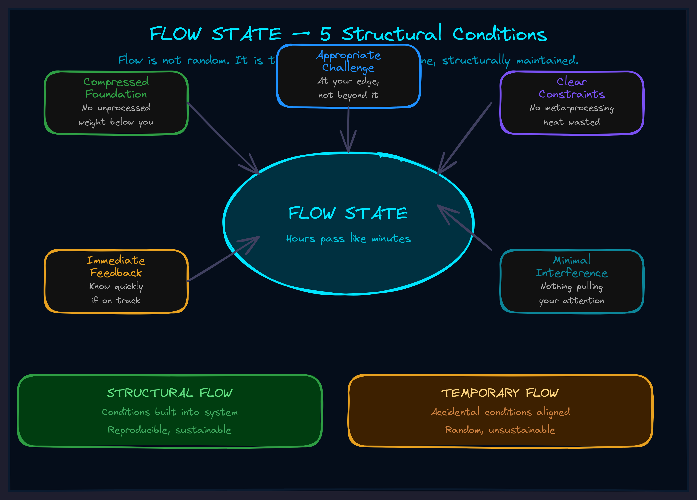

May 2026Level 6 · ConcentrationThe operator
Flow: Why Effortless Execution Is an Engineering Problem
Flow isn't a talent. It isn't a mood. It's what happens when five structural conditions are met — and what doesn't happen when any one of them is missing.

The Mystery That Isn't One
Some days, hours disappear. You sit down, start working, look up, and significant progress just... happened. It didn't feel hard. It didn't feel easy either. It felt like operating.
Other days, you grind. Same desk. Same brain. Same project. But every line of code is a fight. Every paragraph is pulled out with pliers. You're pushing against something invisible, and by the end of the day you have almost nothing to show for it.
Most people treat this as weather. "Good days and bad days." Maybe they blame sleep. Maybe they blame mood. Maybe they just accept that sometimes the magic shows up and sometimes it doesn't.
Flow is not magic. It's architecture. And the reason you can't produce it on demand is that you're treating a structural problem like a psychological one.
Five Conditions, Zero Negotiation
I spent years noticing when flow showed up and when it didn't. Not in the abstract — in the actual work sessions, the actual builds, the actual days where hours vanished versus days where minutes crawled. And a pattern emerged that was embarrassingly mechanical.
Flow requires exactly five conditions. All five. Not four out of five. Not "mostly." All of them, or it doesn't happen.
1. Compressed Foundation
The layers below you must be done. Not "in progress." Not "good enough." Done and compressed — meaning they no longer occupy your attention.
If you're trying to write a feature while still re-debating the architecture, you're carrying the weight of an incomplete layer. That weight eats the cognitive capacity that flow requires. You can't fly while dragging an anchor.
This is why some Monday mornings are magic and some are miserable. If you left Friday with clean completions, Monday starts on solid ground. If you left Friday mid-decision, Monday starts with the weight of unresolved complexity.
2. Appropriate Challenge
The work has to be at the edge of what you can do — but not past it.
Too easy and you're bored. Your brain wanders. You check email. You find something more interesting. Too hard and you're anxious. You stare at the problem. You try approaches that don't work. You grind.
The flow channel is the narrow band between those two. Challenging enough to require your full engagement. Tractable enough that engagement actually succeeds.
This is why decomposition matters. A problem that's too big isn't a flow candidate. Break it into pieces that are each at the edge of capability, and suddenly each piece is.
3. Clear Constraints
You need to know the space you're operating in. What's allowed. What's required. What's forbidden.
"What should I write about?" is a flow-killer. "Write section 3 of the API doc covering authentication" is a flow-enabler. The difference isn't the difficulty — it's that the second one eliminates deliberation about the space.
Every moment spent asking "should I be doing this?" is a moment not spent doing it. Constraints aren't restrictions. They're the walls of the channel that flow moves through.
4. Minimal Interference
Your attention must be protected. Full stop.
One Slack ping breaks flow. Not because the ping takes time — because re-establishing the context after the ping takes time. The cost isn't the interruption. It's the re-entry.
This one's obvious and everyone knows it and almost nobody actually does it. "I'll just keep notifications on in case something urgent comes up." That sentence has destroyed more productive hours than any technical problem in the history of software.
5. Immediate Feedback
You need to know quickly whether what you're doing is working.
Tight feedback loops produce flow. Write code, run test, see result. Write paragraph, read it back, feel whether it lands. Quick cycles where action meets consequence.
Loose feedback loops kill flow. Write a whole module, deploy it, wait for QA to find the bugs three days later. The uncertainty compounds. "Is this even right?" becomes background noise that eats attention.
The Diagnostic
Flow isn't just a pleasant state — it's a diagnostic tool. The presence of flow tells you the system is working. The absence of flow tells you exactly what's broken.
When you're not in flow, run the checklist:
- Foundation: Am I re-processing completed work? Am I carrying unresolved decisions? If yes — go back and finish the layer. Compress it. Stop carrying it.
- Challenge: Am I bored or overwhelmed? If bored — integrate more complexity, combine tasks. If overwhelmed — decompose into smaller pieces.
- Constraints: Do I actually know what I'm building? If the requirements are fuzzy, clarify them before touching code. Ten minutes of specification saves two hours of wandering.
- Interference: Is something pulling my attention? Close it. Turn it off. The blanket goes up before the work starts, not after the interruption happens.
- Feedback: Will I know quickly if this works? If not, create intermediate checkpoints. Break the wait into smaller confirmations.
I've watched teams go from grinding to flowing in twenty minutes by running this checklist. Not because of motivation. Not because of a pep talk. Because they identified a missing condition and fixed it. That's it.
Temporary vs. Structural
There's a level beyond "entering flow." It's building systems where flow is the default state.
Temporary flow means you've got the conditions met right now. Great. But conditions drift. The Slack notification comes back. The next project starts without a clean foundation. The constraints go fuzzy again. You're back to grinding, and you have to re-create the conditions from scratch.
Structural flow means the conditions are engineered into how you work. The architecture has clean layers. The task decomposition is built into the process. The constraints are defined before work starts. The interference shielding is automatic. The feedback loops are designed into the system.
The difference between a team that sometimes has great days and a team that consistently ships is almost always this. Not talent. Not tools. Whether the conditions for flow are temporary or structural.
Why This Matters for AI Systems
Everything I just described about human flow applies directly to AI agent architecture.
An AI agent grinding through tasks inefficiently? Check the five conditions:
- Is the foundation compressed? Or is the agent re-deriving context it should already have?
- Is the challenge appropriate? Or is the agent attempting tasks beyond its current capability tier?
- Are the constraints clear? Or is the agent deliberating about what it should do instead of doing it?
- Is interference managed? Or is every task getting interrupted by monitoring overhead?
- Is feedback immediate? Or does the agent have to wait for external validation before knowing if it succeeded?
The agent architecture we build with clients is literally designed around these five conditions. Each component exists to guarantee one or more flow conditions for the entire system. When the system flows, throughput goes up and error rates go down — not because the model got smarter, but because the architecture stopped fighting itself.
The Monday Morning Protocol
Before you start your next significant work session — coding, designing, writing, building — spend two minutes:
- Check foundation. Are prerequisites done? Not "in progress." Done. If not, finish them first.
- Calibrate challenge. Is today's work at your edge? Not yesterday's edge — today's capacity might be different.
- Clarify constraints. Can you state in one sentence what you're building and what counts as done?
- Activate the blanket. What could interrupt you? Shut it out before starting. Proactive, not reactive.
- Set up feedback. How will you know if it's working? What's the shortest possible cycle between action and result?
Then begin. Flow is prepared for, not hoped for.
See the Full Picture
Flow connects to Crowning (the state where flow becomes structural), Blanket (the interference management system), Thermal Dynamics (flow operates in the green zone), and Calibration (learning your specific flow conditions over time).
If your team is grinding when it should be flowing — and you want to find out which of the five conditions is broken — we should talk.